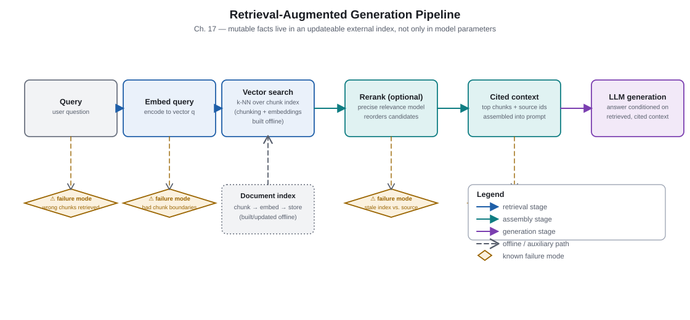
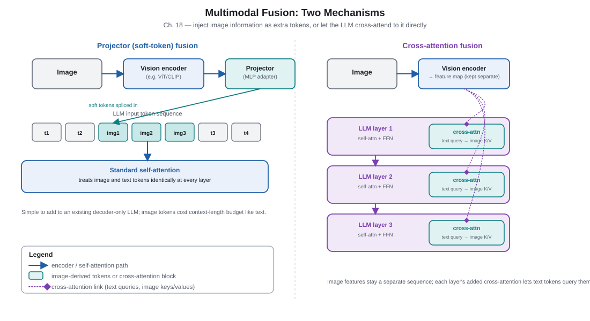
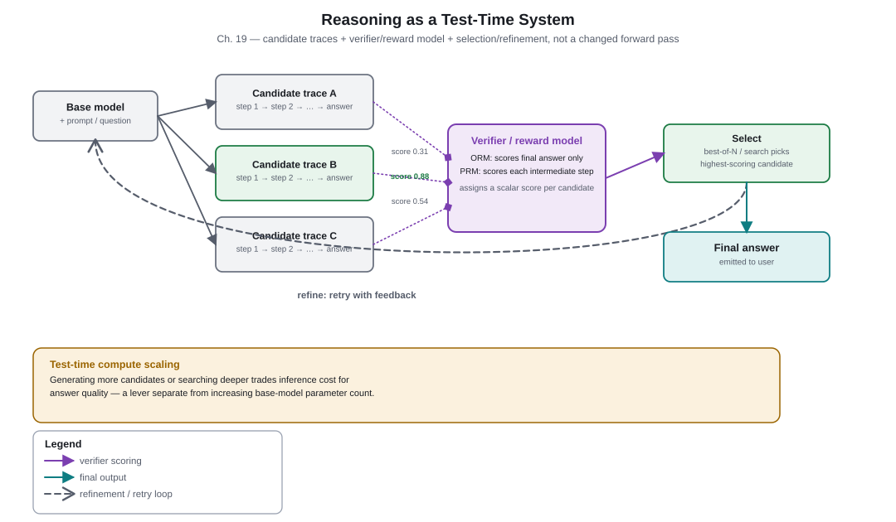

Part 5. Frontiers
Parts 1–4 stayed inside a single forward pass through a single model. Part 5 steps outside it: Chapter 17 moves some knowledge out of the weights and into an external, updatable index. Chapter 18 extends the forward pass to inputs that are not text at all. Chapter 19 treats how much computation to spend at inference time as its own controllable axis, separate from model size. None of these chapters describe a new attention primitive at their core — they describe new systems built around a decoder-only Transformer, which is itself the chapter's central lesson.
Chapter 17. Retrieval-Augmented Generation
2020–2023 · External memorySource: LLM Architecture Evolution, pp. 45–47.
Why this mattered
Everything a Transformer "knows" is baked into its weights at training time — updating one fact means retraining or fine-tuning, and the model can never cite where a fact came from. Retrieval-Augmented Generation (RAG) shifts fast-changing, private, or long-tail facts out of the weights (parametric memory) and into a searchable external index (non-parametric memory): retrieve relevant passages, optionally rerank them, and condition generation on the retrieved text. This buys updateability and provenance, but introduces new failure surfaces — retrieval quality, chunk boundaries, and where in the context the retrieved text is placed — that a purely parametric model never had to worry about.
Key takeaways
- Parametric memory (model weights) is expensive to update and cannot cite sources; non-parametric memory (an external index) can be updated cheaply and supports citation.
- The canonical pipeline is query → embed → retrieve (nearest-neighbor search over a vector index) → optionally rerank → condition generation on the retrieved text.
- Chunking strategy, embedding model choice, and reranking are each independent design decisions with their own failure modes — none of them is "solved" by picking a good LLM.
- Query rewriting and HyDE (Hypothetical Document Embeddings — generate a plausible answer first, then embed and search with that) improve retrieval when the raw user query is a poor match for how relevant passages are phrased.
- "Lost in the middle": models can attend less reliably to information placed in the middle of a long context than information near the start or end, which matters directly for where retrieved passages are inserted.
- RAG does not guarantee factuality or correct citation — the generator can still ignore, misread, or hallucinate around retrieved text.
Parametric vs. non-parametric memory
A purely parametric model answers every question from patterns compressed into its weights during training. This is fast and requires no extra infrastructure, but it means the model's knowledge is frozen at training time, cannot be selectively corrected, and offers no way to show where an answer came from. Non-parametric memory — a document store plus a vector index — can be updated by adding or removing documents with no retraining, and every retrieved passage is a traceable, inspectable citation. The trade is added latency, added infrastructure, and a new dependency on retrieval quality that a parametric-only model does not have.
The retrieval pipeline
A typical RAG pipeline: (1) split source documents into chunks small enough to embed meaningfully but large enough to preserve context; (2) embed each chunk with a sentence/passage embedding model and store the vectors in an index; (3) at query time, embed the (possibly rewritten) query and retrieve the nearest chunks by vector similarity; (4) optionally rerank the retrieved set with a more expensive, more accurate model that only has to score a short list rather than the whole index; (5) insert the surviving passages into the LLM's context and generate. Query rewriting and HyDE address the common case where the user's literal query and the phrasing of a relevant passage do not embed close together — HyDE sidesteps this by generating a hypothetical answer first and embedding that for retrieval, on the intuition that an answer-shaped text is more likely to be near real answer passages in embedding space than a question-shaped query is.

Failure modes
| Failure point | Symptom | Typical mitigation |
|---|---|---|
| Retrieval miss | Relevant passage never enters the candidate set | Better embeddings, hybrid lexical+vector search, query rewriting/HyDE |
| Chunk boundary cuts a fact | A needed sentence is split across two chunks, neither retrieved alone is sufficient | Overlapping chunk windows, semantic (not fixed-length) chunking |
| Reranker miscalibration | A truly relevant passage is ranked below irrelevant ones | Evaluate reranker separately from end-to-end answer quality; calibrate threshold |
| "Lost in the middle" placement | Model under-uses a retrieved passage placed mid-context even though it was retrieved correctly | Place highest-confidence passages near the start or end of context; keep retrieved sets short |
| Stale index | Retrieved passage was correct when indexed but is now outdated | Freshness metadata, re-indexing cadence matched to source volatility |
| Citation mismatch | Model states a claim not actually supported by its cited passage | Post-hoc attribution checking; explicit "quote-then-answer" prompting patterns |
Going deeper: embeddings and similarity search
Retrieval typically ranks chunks by cosine similarity or dot product between the query embedding and each chunk embedding, found efficiently over large indexes with approximate nearest-neighbor structures (rather than an exhaustive scan) so that latency stays low as the index grows. Reranking then re-scores only the top handful of candidates with a model that jointly encodes the query and each candidate passage (rather than scoring each in isolation, as embedding-only retrieval does), recovering some of the quality that pure vector search leaves on the table in exchange for that extra, more expensive scoring pass.
Checkpoint
- What can non-parametric memory do that parametric memory cannot?
Reveal answer
It can be updated cheaply (add/remove documents, no retraining) and it supports citing exactly which passage an answer came from — neither is possible with knowledge baked purely into model weights. - Why might HyDE improve retrieval over embedding the raw user query directly?
Reveal answer
A user's question and a relevant passage's phrasing often do not embed close together. HyDE generates a plausible, answer-shaped text first and embeds that instead, on the intuition that answer-shaped text sits closer to real answer passages in embedding space than a question does. - A passage was retrieved correctly but the model still gave a wrong answer. Name two
distinct reasons this could happen that are not "retrieval failed."
Reveal answer
The passage may have been placed in a context position the model under-attends to ("lost in the middle"); or the model may have ignored/misread the retrieved text and answered from its own parametric prior instead. - Does RAG guarantee factual, well-cited output? Why or why not?
Reveal answer
No. RAG only changes what information is available in context; the generator can still ignore correct passages, misattribute claims, or hallucinate around retrieved text — factuality is improved on average, not guaranteed.
Sources
- Liu et al., Lost in the Middle: How Language Models Use Long Contexts (2023). See PDF Appendix B annotated bibliography, pp. 64–66, for full citation.
- Retrieval-augmented generation pipeline and chunking/reranking practice, as described in LLM Architecture Evolution, pp. 45–47, and its Appendix B bibliography.
Chapter 18. Multimodal Architectures
2020–2023 · Cross-modal fusionSource: LLM Architecture Evolution, pp. 48–50.
Why this mattered
A text-only decoder-only Transformer has no native way to consume an image, an audio clip, or a video. Multimodal architectures solve this by converting non-text signals into something a Transformer forward pass can use — either as tokens inserted directly into the input sequence, or as features injected through cross-attention — and the choice between these patterns trades off training/inference cost against how tightly the modalities can interact.
Key takeaways
- Modality tokenization turns a non-text signal into a sequence a Transformer can process — commonly image patches (ViT-style) or discrete codebook tokens (VQ-style).
- Three fusion patterns dominate: token/early fusion (project encoder features into the LLM's embedding space and concatenate them into the input sequence, as in LLaVA), cross-attention fusion (inject visual features via dedicated attention layers rather than concatenation, as in Flamingo), and a projector/adapter pattern (train a small connector while keeping the encoder and LLM mostly frozen).
- Pretrained visual encoders (ViT, CLIP, and related families) are reused rather than trained from scratch — the contrastive image-text objective behind CLIP is itself a training-system innovation distinct from the architecture that consumes its output.
- Staged training (align the connector first, then instruction-tune end-to-end) is the standard recipe rather than a single joint training run from initialization.
- Video's extra time dimension multiplies token cost per second of content, motivating frame sampling and temporal compression rather than naively tokenizing every frame.
- Discrete (codebook) tokens reuse the language model's existing generative machinery directly; continuous features preserve more information but require a bespoke injection point (projector or cross-attention) rather than fitting into the existing token vocabulary.
Modality tokenization
Before a Transformer can process an image, it must become a sequence. The Vision Transformer (ViT) approach splits an image into fixed-size patches, linearly projects each patch into a token-sized vector, and treats the resulting sequence of patch tokens exactly like a sequence of word tokens. An alternative, discrete tokenization, quantizes visual features against a learned codebook (vector-quantization) so each patch becomes a discrete symbol from a fixed vocabulary — enabling the same categorical, next-token training objective used for text, at the cost of a lossy quantization step that continuous features avoid.
Fusion patterns
Token/early fusion projects visual encoder output into the LLM's embedding space and concatenates it with text tokens, so ordinary self-attention handles cross-modal interaction with no architectural change to the LLM itself — simple to implement, but every visual token adds directly to sequence length and attention cost. Cross-attention fusion instead adds dedicated attention layers inside the LLM that let text tokens attend to visual features without those features occupying sequence positions — Flamingo's gated cross-attention is the canonical example — which controls sequence-length growth but requires modifying the LLM's internals rather than treating it as a fixed black box. Projector/adapter fusion is an implementation strategy more than a third geometry: a small trainable network (often just one or two layers) maps encoder features into whichever fusion point (token-concatenation or cross-attention) the architecture uses, letting most of the encoder and LLM stay frozen during the cheapest training stage.

Architecture innovation
- ViT-style patch tokenization and CLIP-family encoder design.
- The projector layer and Flamingo-style gated cross-attention injection point.
Training / systems innovation
- Contrastive image-text pretraining objective (CLIP) used to obtain a reusable encoder.
- Staged training recipe: align the connector first (encoder + LLM frozen), then instruction-tune, then optionally unfreeze more of the stack.
- Frame sampling / temporal compression schemes for video token-cost control.
Encoders & staged training
Going deeper: why video multiplies token cost
A single image might tokenize into a few hundred patch tokens. A video is, naively, a sequence of images at some frame rate — tokenizing every frame independently multiplies the per-image token cost by the number of frames, which for even a short clip at a normal frame rate can dwarf the text token budget entirely. Practical systems instead subsample frames (processing far fewer than the source frame rate), pool or compress tokens temporally across nearby frames, or use dedicated video encoders that model short temporal windows jointly rather than frame-by-frame, trading temporal fidelity for a token budget the surrounding LLM can actually afford to attend over.
Checkpoint
- What is the core difference between token/early fusion and cross-attention fusion?
Reveal answer
Token/early fusion concatenates projected visual features directly into the input sequence, so they occupy sequence positions and are handled by ordinary self-attention; cross-attention fusion injects visual features through dedicated attention layers inside the LLM without adding sequence positions, requiring internal changes to the LLM instead. - Why do most multimodal systems reuse a pretrained encoder like ViT or CLIP rather than
training a visual encoder from scratch alongside the LLM?
Reveal answer
Pretrained encoders (especially CLIP's contrastively-trained, image-text-aligned representations) are expensive to train and already capture broadly useful visual structure; reusing one is cheaper and typically more effective than training a bespoke encoder jointly with limited multimodal data. - What problem does frame sampling/temporal compression solve for video inputs?
Reveal answer
Tokenizing every frame independently multiplies per-image token cost by frame count, quickly exceeding a practical attention budget; sampling and temporal compression reduce the token count per second of video to something the LLM can afford to process. - Is CLIP's contrastive pretraining an architecture innovation or a training-system
innovation, and why does that distinction matter?
Reveal answer
It is primarily a training-system innovation — a new pretraining objective — rather than a new forward-pass architecture; separating this from architecture innovations (like the projector or cross-attention injection point) avoids conflating "how the model is trained" with "how the model computes its output."
Sources
- Dosovitskiy et al., An Image is Worth 16x16 Words (Vision Transformer) (2020). arxiv.org/abs/2010.11929
- Radford et al., Learning Transferable Visual Models From Natural Language Supervision (CLIP) (2021). arxiv.org/abs/2103.00020
- Alayrac et al., Flamingo: a Visual Language Model for Few-Shot Learning (2022). arxiv.org/abs/2204.14198
- Liu et al., Visual Instruction Tuning (LLaVA) (2023). arxiv.org/abs/2304.08485
Chapter 19. Reasoning & Test-Time Compute
2022–2025 · Inference-time scalingSource: LLM Architecture Evolution, pp. 51–54.
Why this mattered
A single forward pass allocates a fixed, small amount of computation per output token, which limits how much "thinking" a model can do on a genuinely hard problem in one shot. Chain-of-thought showed that letting a model spend extra generated tokens as a scratchpad recovers accuracy on multi-step problems; o-series- and DeepSeek-R1-style systems go further, turning how much to think into a controllable, trainable axis via verifier feedback and search. This is best understood as a change to the training and inference loop around a decoder-only Transformer, not a change to the Transformer block's forward-pass math itself.
Key takeaways
- Chain-of-thought reframes reasoning as generated intermediate tokens the model can condition on — a "scratch tape" that works around the fixed per-token compute of a single forward pass.
- A Process Reward Model (PRM) scores each intermediate reasoning step; an Outcome Reward Model (ORM) scores only the final answer — they supervise search and training differently and are not interchangeable.
- Test-time scaling trades inference compute for accuracy: best-of-N sampling, self-consistency (majority vote across sampled reasoning chains), and verifier-guided tree/beam search are all ways to spend more compute at inference for a better answer.
- Reinforcement learning against a verifier/reward signal can train a model to generate longer, more self-correcting reasoning traces, as reported for o1/DeepSeek-R1-style systems.
- This capability is largely a system built around an largely unchanged Transformer forward pass — separate "architecture innovation" from "training/inference-system innovation" explicitly when discussing this chapter.
- Benchmark scores and specific product claims in this area move especially fast; treat them as historical snapshots to re-verify, not settled state-of-the-art facts.
Chain-of-thought as scratch tape
A decoder-only model predicts each output token from a fixed amount of computation given everything generated so far — it cannot "spend longer" on one particular token. Chain-of-thought prompting works around this limit not by changing the per-token computation, but by having the model generate intermediate reasoning tokens before its final answer; each of those intermediate tokens becomes part of the context for predicting the next one, so the sequence of generated tokens carries forward partial results the single forward pass alone could not hold. In this framing, the visible chain of text functions like a scratchpad — external, sequential working memory built from the model's own outputs — rather than evidence of a different internal computation.
Verifiers, PRM & ORM
An Outcome Reward Model (ORM) is trained to judge whether a final answer is correct, given the full reasoning trace that produced it — cheap to supervise (only the end result needs a label) but gives no signal about which intermediate step, if any, went wrong. A Process Reward Model (PRM) is trained to score the correctness of each individual reasoning step, giving much more granular training and search signal, at the cost of needing step-level supervision (human- or model-generated), which is more expensive to collect than final-answer labels alone.

Test-time scaling & search
Rather than generating one answer, a system can sample N candidate reasoning chains and either take a simple majority vote across their final answers (self-consistency) or use a reward model to pick the single best one (best-of-N). More elaborate systems perform step-by-step tree or beam search, using a PRM to prune weak partial traces before they are extended further, concentrating compute on the most promising partial reasoning paths rather than sampling complete chains independently. All of these spend additional inference compute — beyond generating one answer with one forward pass each token — in exchange for higher accuracy, making "how much compute to spend per query at inference" a real, tunable design dimension distinct from model size.
Architecture innovation
- Minimal to none — the underlying decoder-only Transformer block is largely unchanged from Chapters 9–13.
Training / systems innovation
- Chain-of-thought data curation and prompting strategy.
- PRM/ORM training and use as a search/ranking signal.
- Reinforcement learning against verifier/reward feedback to elicit longer, self-correcting traces.
- Inference-time sampling budget, search strategy (best-of-N, self-consistency, beam/tree search).
Going deeper: why this is framed as a system, not a new attention primitive
Every mechanism in this chapter — generating a longer trace, scoring it with a separate PRM
or ORM network, sampling multiple candidates, running a search over partial traces, and
fine-tuning with RL against that verifier signal — operates on top of an ordinary decoder-only
Transformer forward pass. None of it changes how a single attention layer computes
softmax(QKᵀ/√dₖ)V, and the verifier is typically its own separate model rather than
a modification of the base model's internals. This is why the source frames current reasoning
capability primarily as a training-and-inference system wrapped around an otherwise
familiar architecture, rather than as Chapter 20's kind of architecture-family comparison.
Checkpoint
- In what precise sense is chain-of-thought a workaround for a Transformer's fixed
per-token compute, rather than a change to that compute?
Reveal answer
Each forward pass still spends the same fixed computation per generated token; chain-of-thought instead lets the model generate additional intermediate tokens that become context for later tokens, effectively spreading a hard problem's computation across multiple forward passes rather than deepening any single one. - What is the key difference in what a PRM and an ORM are trained to score, and what does
that difference cost in supervision?
Reveal answer
An ORM scores only the final answer (cheap to supervise — just a correctness label on the outcome); a PRM scores each intermediate reasoning step (more useful signal for search and training, but requires more expensive step-level supervision). - Name two distinct ways a system can spend more inference-time compute to improve accuracy
on a hard problem.
Reveal answer
Any two of: sampling multiple chains and taking a majority vote (self-consistency); sampling multiple chains and picking the reward-model-best one (best-of-N); running a verifier-guided tree/beam search over partial reasoning steps. - Why does the chapter treat current reasoning-system benchmark claims with extra caution
compared to, say, the Transformer's core attention formula?
Reveal answer
Because reasoning/test-time-compute systems, their benchmarks, and the specific products implementing them are changing very rapidly; the underlying mechanism descriptions are stable, but which system is "best" or exactly what score it achieved is a fast-moving, easily outdated claim that should be re-verified before being repeated as current fact.
Sources
- OpenAI, OpenAI o1 System Card (2024). arxiv.org/abs/2412.16720; OpenAI, Learning to reason with LLMs (2024). openai.com/index/learning-to-reason-with-llms; OpenAI, Introducing o3 and o4-mini (2025). openai.com/index/introducing-o3-and-o4-mini; DeepSeek-AI, DeepSeek-R1 (2025). arxiv.org/abs/2501.12948
- Wei et al., chain-of-thought prompting; Lightman et al., process reward model training; Snell et al., inference-time compute scaling. See PDF Appendix B annotated bibliography, pp. 64–66, for full citations.